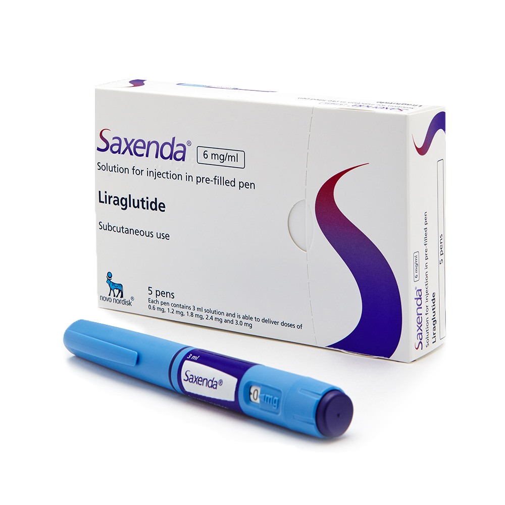
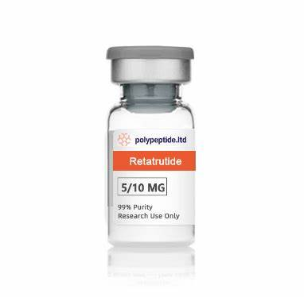
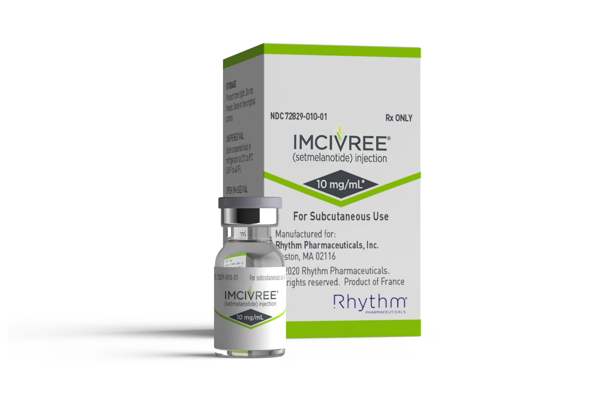

Introduction
If you're more worried about being at a healthy weight, these supplements are for you.
The Pills:
Below are the pills that are recommended/works best for people with a BMI of 35.0-39.9+
1. Compounded Semaglutide
Ro works with state-licensed compounding pharmacies to produce compounded semaglutide. Compounding is regulated by both FDA and state boards of pharmacy. A licensed compounding pharmacy must comply with both federal and state laws, which include administrative requirements and quality standards.
Compounding is the process of creating a medication that’s tailored to the needs of an individual patient. For example, some patients may need a medication in liquid form when the FDA-approved drug comes in a pill. Additionally, a pharmacy can compound medications of FDA-approved drugs that are in shortage.
Compounded drugs are prepared by state-licensed compounding pharmacies that meet FDA and state requirements, including quality standards. When compounding in compliance with federal law, compounded drugs are not subject to FDA approval and do not have to undergo safety, effectiveness, or manufacturing review.
Ro is partnering with compounding pharmacies to offer compounded semaglutide that uses the same active ingredient as Ozempic and Wegovy. In addition, Ro only offers a compounded product that contains semaglutide base (the same active ingredient in Ozempic and Wegovy) and not semaglutide salts (which are not the same active ingredient as Ozempic and Wegovy).
2. Saxenda

To help with weight management along with a lower-calorie diet and exercise in:
Adults with a body mass index (BMI) greater than 30 kg/m2, or greater than 27 kg/m2 with a weight-related health problem (e.g., high blood pressure, Type 2 diabetes, high cholesterol)
Children 12 years of age and older who weigh over 132 lbs and have a high BMI.
Saxenda (liraglutide) is used along with a balanced diet and exercise to help with weight loss in certain adults and children. This prescription weight loss medication is a glucagon-like peptide-1 (GLP-1) receptor agonist. It works by slowing down your gut and making you feel less hungry. Saxenda (liraglutide) is a prefilled pen of medication that's injected once daily under the skin on the stomach or thighs. You can inject Saxenda (liraglutide) at home by yourself after your healthcare professional (HCP) trains you on how to prepare and use it. Some common side effects include nausea, vomiting, and diarrhea.
3. Retatrutide

Researchers from Virginia Commonwealth University recently shared findings that suggest retatrutide can help reduce liver fat levels. A new analysis of a phase 2 trial found that more than 85% of people who received retatrutide for 48 weeks saw their fatty liver disease go away (resolve).
For context, people who are considered obese have a higher risk of developing fatty liver disease. If left unmanaged, it could eventually lead to liver scarring or other health complications.
Retatrutide is an injectable medication that’s administered under the skin once weekly. Eli Lilly, the manufacturer of retatrutide, estimates that the medication may help people lose up to 24% of their initial body weight after about 11 months (48 weeks). It may be even more effective than tirzepatide (Zepbound) for weight loss.
4. Imcivree

Imcivree (setmelanotide) is an injectable medication used for weight management in people with certain genetic conditions. It's convenient because it only needs to be injected once a day, but it can cause serious side effects like depression, suicidal thoughts, and problems with sexual function.
Imcivree is Long-term weight management in people aged 6 years and older with obesity due to certain genetic conditions:
Proopiomelanocortin (POMC) deficiency,
Proprotein convertase subtilisin/kexin type 1 (PCSK1) deficiency,
Leptin receptor (LEPR) deficiency,
Bardet-Biedl syndrome (BBS).
How Imcivree (setmelanotide) works:
Imcivree (setmelanotide) is a melanocortin agonist. It binds to melanocortin receptors in your brain to lower your appetite and make your body use up more energy. This helps promote weight loss.
Outro
If you're more worried about getting pregnant, these 2 Oral Contreceptive pills are recommended for people with a BMI of between 35.0-39.9 or 40+
1. Aviane
1 tablet orally once a day at the same time each day in the order directed on the blister pack.
Aviane is a combination birth control pill containing female hormones that prevent ovulation (the release of an egg from an ovary). Aviane also causes changes in your cervical mucus and uterine lining, making it harder for sperm to reach the uterus and harder for a fertilized egg to attach to the uterus.
Aviane is used as contraception to prevent pregnancy.
Aviane does not protect against transmission of HIV (AIDS) and other sexually transmitted diseases (STDs) such as chlamydia, genital herpes, genital warts, gonorrhea, hepatitis B, and syphilis. ake Aviane exactly as prescribed by your doctor. Follow all directions on your prescription label and read all medication guides or instruction sheets.
Take your first pill on the first day of your period or on the first Sunday after your period begins. You may need to use back-up birth control, such as condoms or a spermicide, when you first start using this medicine. Follow your doctor's instructions.
Take one pill every day, no more than 24 hours apart. When the pills run out, start a new pack the following day. You may get pregnant if you do not take one pill daily. Get your prescription refilled before you run out of pills completely.
Some birth control packs contain seven "reminder" pills to keep you on your regular cycle. Your period will usually begin while you are using these reminder pills.
You should chew the chewable tablet (pill) and then swallow it with a glass of water, or if you prefer you should swallow the chewable tablet (pill) whole. Take it on an empty stomach.
Use a back-up birth control if you are sick with severe vomiting or diarrhea.
You may have breakthrough bleeding, especially during the first 3 months. Tell your doctor if this bleeding continues or is very heavy.
If you need major surgery or will be on long-term bed rest, you may need to stop using this medicine for a short time. Any doctor or surgeon who treats you should know that you are using Aviane.
While taking Aviane, you will need to visit your doctor regularly.
Store at room temperature away from moisture, heat, and light.
2. Yaz
Do not smoke while taking Yaz, especially if you are older than 35 years of age.
Avoid unprotected intercourse. Yaz will not protect you from sexually transmitted diseases, including HIV and AIDS. Using a condom is the only way to protect yourself from these diseases.
Yaz tablets contain a combination of progesterone (drospirenone) and estrogen (ethinyl estradiol). Yaz is a combination birth control pill containing female hormones that prevent ovulation (the release of an egg from an ovary). Yaz also causes changes in your cervical mucus and uterine lining, making it harder for sperm to reach the uterus and harder for a fertilized egg to attach to the uterus.
Yaz is used as contraception to prevent pregnancy. It is also used to treat moderate acne in women who are at least 14 years old and have started having menstrual periods, and who wish to use birth control pills. Take Yaz exactly as prescribed by your doctor. Follow all directions on your prescription label. Do not take Yaz in larger or smaller amounts or for longer than recommended. Take your first pill on the first day of your period or on the first Sunday after your period begins. You may need to use back-up birth control, such as condoms with spermicide, when you first start using this medication.
Take one pill every day, no more than 24 hours apart. When the pills run out, start a new pack the following day. You could get pregnant if you do not take one pill daily.
You may have breakthrough bleeding, especially during the first 3 months. Tell your doctor if this bleeding continues or is very heavy.
If you need major surgery or will be on long-term bed rest, you may need to stop using Yaz for a short time. Any doctor or surgeon who treats you should know that you are using this medicine.
Store Yaz at room temperature away from moisture and heat.